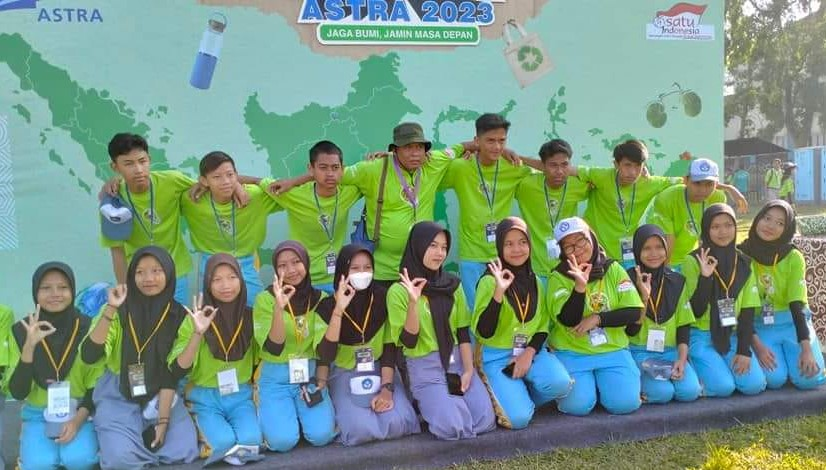

1. Perjusami (Perkemahan Jumat Sabtu Minggu) Gudep 03-531 dan 03-532 pangkalan SMP Negeri 277 Jakarta.
Kegiatan Perjusami dilaksanakan pada tanggal 22, 24, 25 Juni 2023 di Bogor. Kegiatan diikuti sebanyak 12 siswa dengan pendamping kak Naura, kak Saya di dan kak Basri. Perjalanan menuju Bogor, dilakukan dengan transportasi Kereta Api. Selama di kegiatan, peserta diajak melakukan perjalanan
2. Kegiatan Jambore Adiwiyata Nasional tahun 2023 di Baturraden
Kegiatan Jambore Adiwiyata Nasional tahun 2023 berlangsung di Baturraden selama 2 hari.
Hari pertama dilaksanakan di SMP Negeri 2 Baturraden.
Acara dibuka oleh bupati Banyumas bapak… dengan ditandai pelepasan 2 ekor burung dara oleh kader Adiwiyata salah satunya dari Jakart Utara Bagas (ketua OSIS SMP Negeri 277).
Kegiatan di SMP N Baturraden meliputi kegiatan 6 Aksi Adiwiyata. Dimana peserta dapat melihat dan mendengarkan penjelasan dari kakak- kakak pembimbing.
Bagi penggiat Adiwiyata, kegiatannya selain penyuluhan ada kegiatan kunjungan ke wilayah Rempong melihat kegiatha usaha kecil menengah (UMKM) berupa usaha pembuatan Gula Aren dan minuman Pala serta manisan pala.
Hari ke dua, kegiatan di fokuskan di lapangan depan sekolah SMA Negeri Baturraden 1.
Kegiatan hari ke dua berupa Festival Lingkungan. Kegiatannya ada sambutan dari Astra, bupati. Ada penyerahan penghargaan dalam lomba Video Aksi Lingkungan. Penghargaan kelompok kader yang aktif dalam kegiatan. Dan ada pertunjukan dari penampilan Band ternama di wilayah Baturraden.
Jakart Utara yang diwakili oleh penggiat Adiwiyata dari SMP Negeri 277 dan SMP Negeri 173 mendapat penghargaan Juara 5 Aksi Lingkungan Hidup.
3. Kegiatan Penyerahan Peserta Didik kelas IX tahun 2022-2023 kepada Orang Tua sekaligus Penyerahan Piagam Peserta Didik Berprestasi bidang Akademik dan Non Akademik.
Peserta Didik berprestasi di bidang Akademik diberikan kepada anak yang diterima di SMA Muhammad Husni Thamrin sebanyak 2 orang. Siswa berprestasi di kelas masing-masing sebanyak 21 orang. Masing-masing kelas 3 anak yang terpilih. Sedangkan bidang non akademik ada 6 anak. Mereka berhasil masuk PPDB jalur prestasi.
Kegiatan yng dilakukan sederhana dihadiri para orang tua yang anaknya berprestasi. Siswa kelas IX 1- IX-7 dengan menggunakan seragam batik sekolah.
Leave a Comment